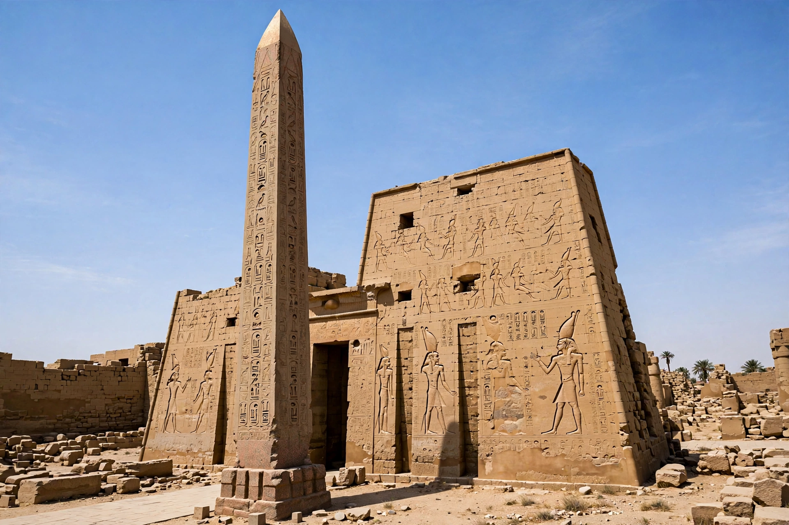

From Wikipedia, the free encyclopedia
| Obelisk | |
| Origin | Ancient Egypt (from the Old Kingdom, c. 2500 BCE) |
|---|---|
| Form | Tall, four-sided, tapering monolithic shaft topped by a pyramidion |
| Material | Typically a single block of granite (often Aswan red granite) |
| Tallest ancient | Lateran Obelisk, Rome — 32.18 m (45.7 m with base), originally from Karnak |
| Tallest modern | Washington Monument, USA — 169 m (an obelisk-shaped structure, not a monolith) |

An obelisk (from Greek ὀβελίσκος, obeliskos, "spit, nail, pointed pillar") is a tall, four-sided, narrow tapering monument which ends in a pyramid-like shape, called a pyramidion, at the top. Originally constructed from a single stone (a monolith), obelisks were erected in pairs at the entrances of ancient Egyptian temples and bore inscriptions celebrating the pharaoh and the sun god Ra. Transported across the ancient and modern worlds, obelisks became one of the most widely imitated monumental forms in Western architecture.
The form descends from the sacred benben stone of Heliopolis, symbol of the primordial mound and of the sun's rays. From the Old Kingdom, low, massive obelisks stood in sun temples; from the Middle and New Kingdoms, slender granite shafts — quarried at Aswan, inscribed with hieroglyphs, and shipped down the Nile — flanked temple pylons in pairs. The pharaohs Hatshepsut and Thutmose III raised famous examples at Karnak; one of Hatshepsut's pair still stands there, among the tallest surviving in Egypt. The pyramidion was often sheathed in gold or electrum to catch the dawn light. The great unfinished obelisk in the Aswan quarries, abandoned after cracking, reveals the quarrying technique — had it been completed it would have been the largest ever, nearly 42 m long.
Roman emperors, beginning with Augustus, looted Egypt's obelisks as trophies; Rome today holds more ancient obelisks (thirteen) than Egypt itself, many re-erected by Renaissance and Baroque popes — notably Sixtus V, who had the Vatican Obelisk moved to St Peter's Square in 1586 in a famous feat of engineering supervised by Domenico Fontana. In the 19th century, Egypt gave two more famous shafts abroad: the Luxor Obelisk, erected in the Place de la Concorde in Paris (1836), and the pair known as "Cleopatra's Needles" in London (1878) and New York (1881). An Axumite tradition in Ethiopia produced its own carved stelae-obelisks, one of which was looted to Rome in 1937 and returned to Axum in 2005–2008.
The form was revived for commemorative monuments: the Washington Monument in Washington, D.C. (completed 1884, 169 m) — built of masonry rather than a single stone — remains the world's tallest obelisk-shaped structure; others include the Obelisk of Buenos Aires (1936) and countless war memorials and grave markers in the 19th-century "Egyptian Revival" style.